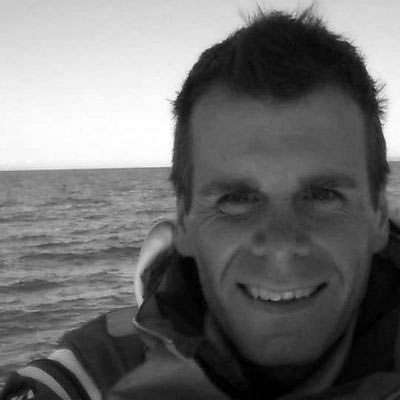

Jonathan Coe
@oceansciencetec
@EarthEcho Expeditions: What’s the Catch? Launch with a virtual field trip to the University of Plymouth’s Marine Station. Hosted by Dr. Benjamin Ciotti, lecturer in marine biology at the University of Plymouth.
Dr Imogen Napper
@Imogennapper
The amount of #plastic we use is increasing at an unsustainable rate. With no waste management in place, people often burn waste or discard it into a river. Together, we need to think of how to manage and minimise the waste we create.
EarthEcho Int'l
@EarthEcho
Excited for the launch of Expedition: What’s the Catch? Today at 2 pm gmt!
University of Plymouth
@PlymUni
What is water security? Dr @Caroline_Clason discusses her research investigating the impact of climate change on glacier-fed rivers and how #watersecurity affects communities in the Peruvian Andes.